Chapter 2 Examining and Summarizing Data
Sources for this chapter:
- ggplot2: https://ggplot2.tidyverse.org/
2.1 Introduction
Examining and summarizing data involves visualizations (e.g., graphs and charts) and tables. For visualization, the most popular package in R is th ggplot2 package.
Data for this chapter:
The
airlinesatdata is used from theMKT4320BGSUcourse package. Load the package and use thedata()function to load the data.# Load course package library(MKT4320BGSU) # Load data data(airlinesat)
2.2 Visualizations
2.2.1 Package ggplot2
2.2.1.1 Introduction
- First, make sure the
ggplot2library is loaded:
library(ggplot2) ggplot2is based on the basic idea that for a graph, we need three things:- Data:
ggplot2is designed to work with data frames - Coordinate system: what are the x and y variables
- Geoms: how is the data being represented (e.g., points, lines, etc.)
+- Data:
- When ggplot is used in the console or from a script, the plot appears in the
Viewertab of the lower-right corner
Video Tutorial: Data Visualizations using ggplot (Introduction)
2.2.1.2 Usage
- A plot starts with the
ggplot()function, which requires two arguments:- Source of the data, which can be piped in (i.e.,
%>%) - The mapping of the data components
- This argument is an aesthetic function,
aes(), which maps the variable(s) to the coordinate system
- This argument is an aesthetic function,
ggplot()function alone is used, the output is simply the coordinate system, but with nothing plotted- Because a geom hasn’t been requested
ggplot(airlinesat, # Use data frame 'airlinesat' aes(x=country, y=nflights)) # Map 'country' on x and 'nflights' on y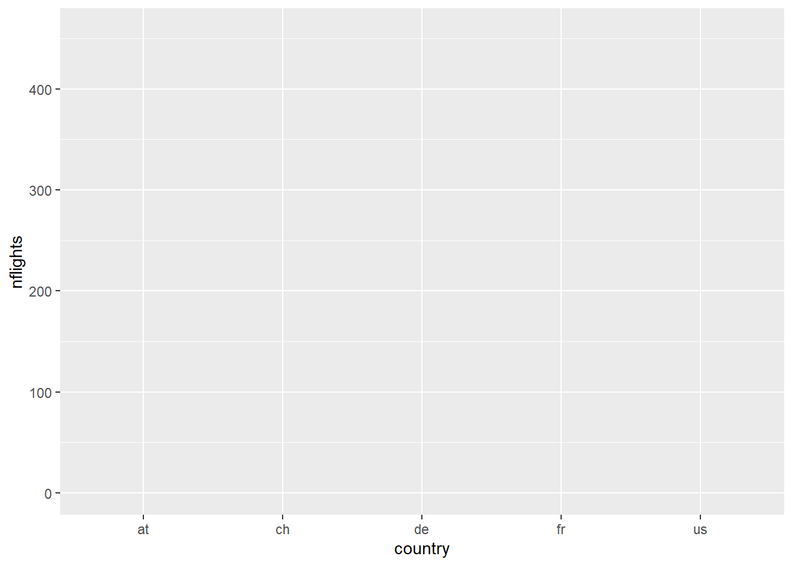Figure 2.1: Call to ggplot() without a geom
- Source of the data, which can be piped in (i.e.,
- Other parts of the plot are adding in layers, using
+- A good analogy is building a house:
The call toggplot()is the foundation, but the structure is built one layer at a time - Example: Request a column chart for a discrete x and a continuous y
ggplot(airlinesat, # Use data frame 'airlinesat' aes(x=country, y=nflights)) + # Map 'country' on x and 'nflights' on y geom_col() # Ask for column chart as the geom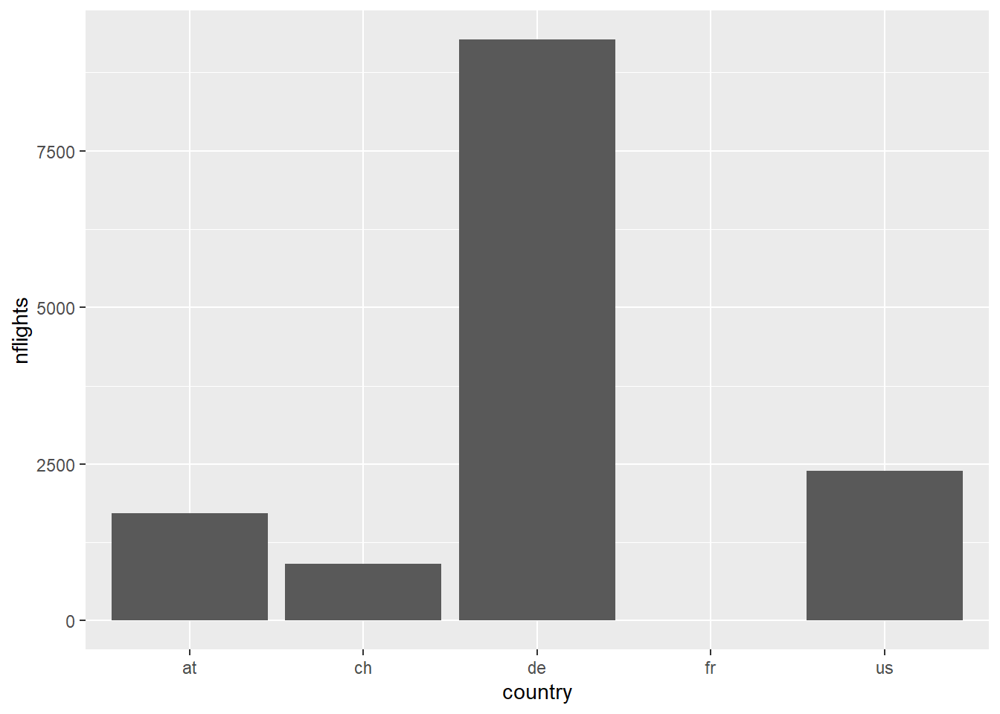Figure 2.2: ggplot() + geom_col()
- NOTE: Each geom has a default statistic to plot
- In this case, it is summing the
nflightsvariable by country - We can use
dplyrandggplot2together to get a different value, such as the mean
- In this case, it is summing the
# Use airlinesat data airlinesat %>% # Group data by 'country' group_by(country) %>% # Create summary statistic summarise(mean_nflights=mean(nflights, na.rm=TRUE)) %>% # Pass this results to ggplot and start the plot ggplot(aes(x=country, y=mean_nflights)) + # Note dataset was `piped` # Request column geom geom_col()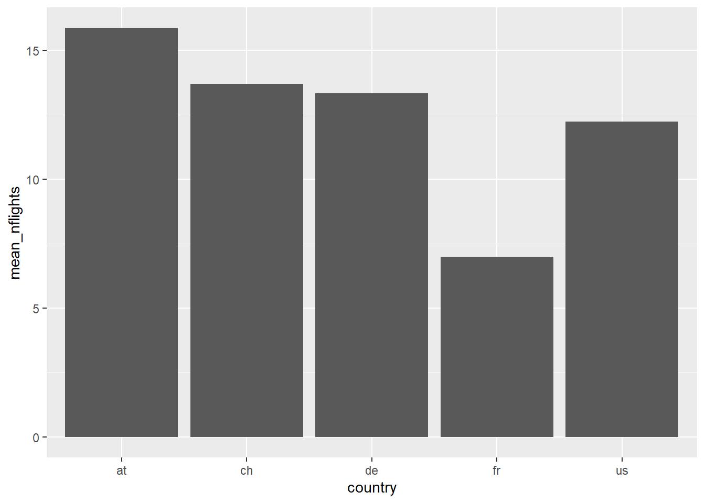Figure 2.3: Using dplyr before ggplot to get mean values
- A good analogy is building a house:
Using ggplot() can get much more advanced. As the tutorial progresses, many examples of additional layers to a ggplot() will be shown.
Video Tutorial: Data Visualizations using ggplot (Basic Usage) Video Tutorial: Data Visualizations using ggplot (Linking with dplyr)
2.2.2 Bar and Column Charts
In ggplot, bar charts, geom_bar(), are used for plotting a single discrete variable, while column charts, geom_col(), are used for plotting a discrete variable on the x axis and a continuous variable on the y axis.
2.2.2.1 Bar Charts
The standard bar chart provides a count of observations of each category of discrete variable x
airlinesat %>% ggplot(aes(x=gender)) + geom_bar()Figure 2.4: Standard bar chart
Video Tutorial: Bar Charts with ggplot::geom_bar (Part 1)
To get percentages of each category, we need to summarize the data and calculate the proportion for each category
airlinesat %>% group_by(gender) %>% # Group data by gender summarise(n=n()) %>% # Create variable with count of each gender mutate(prop=n/sum(n)) %>% # Create variable with proportion by gender ggplot(aes(x=gender, # Variable for the x-axis y=prop)) + # Use 'prop' instead of default counts for y-axis geom_bar(stat="identity") # Use the value of y as-is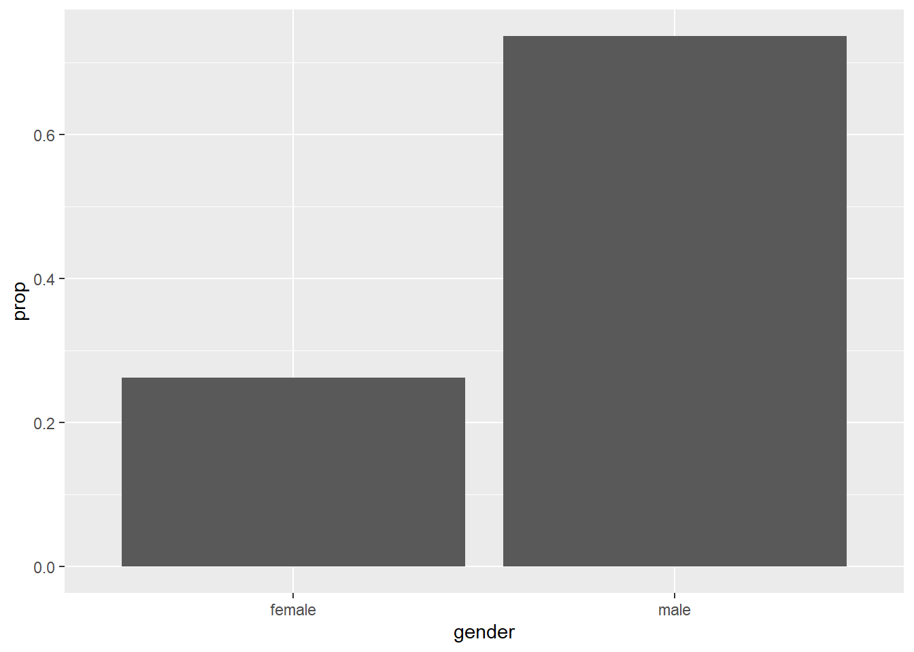Figure 2.5: Bar chart with proportions
Video Tutorial: Bar Charts with ggplot::geom_bar (Part 2)
To make the chart “pretty”, we change the color of each bar we can add layers for axis labels, use the
scalespackage to have the y-axis show percent, add labels for the bars etc.airlinesat %>% group_by(gender) %>% # Group data by gender summarise(n=n()) %>% # Create variable with count of each gender mutate(prop=n/sum(n)) %>% # Create variable with proportion by gender ggplot(aes(x=gender, # Variable for the x-axis y=prop, # Use 'prop' instead of default counts for y-axis fill=gender)) + # Use different color for each bar geom_bar(show.legend=FALSE, # Hide legend stat="identity", ) + # Use the value of y as-is scale_y_continuous(labels=scales::label_percent()) + # y-axis labels % labs(x="Gender", y="Percent") + # Label x- and y-axes geom_text(aes(label=sprintf("%.1f%%", prop*100)), # Format label number vjust=.95, # Vertically adjust the labels fontface="bold", # Bold typeface color="white") # Text color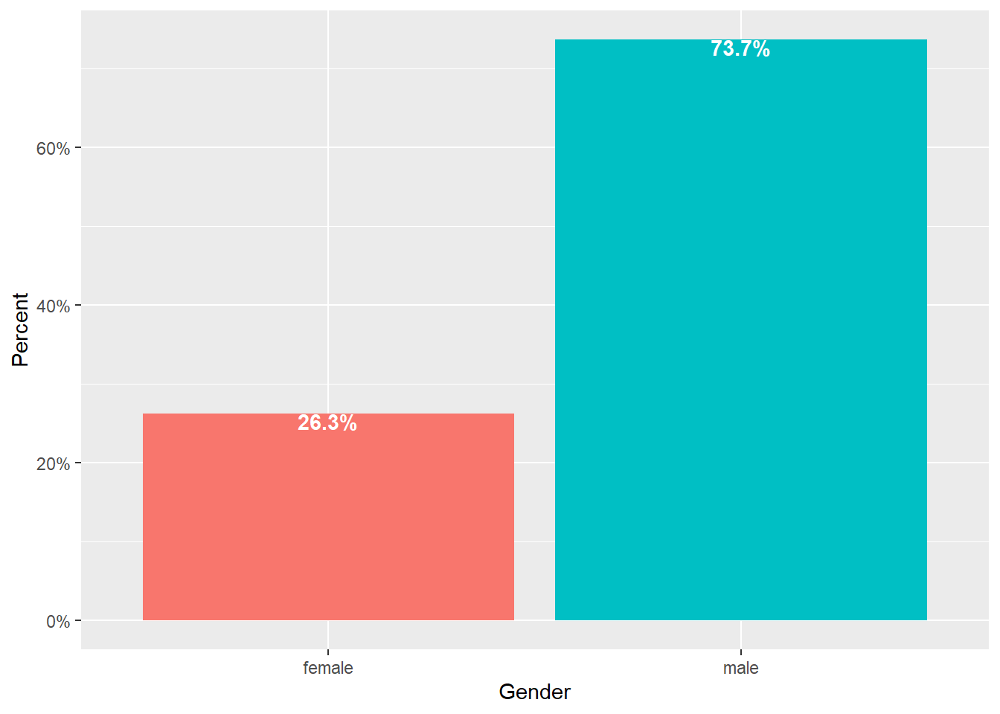Figure 2.6: Prettier bar chart
Video Tutorial: Bar Charts with ggplot::geom_bar (Part 3)
2.2.2.1.1 Bar Chart Variations
2.2.2.1.1.1 Stacked Bar Chart
Used to show one discrete variable by another discrete variable, such as data you would see in a cross-tab
- The x= variable specifies the axis, while the fill= variable stacks the bars by the other variable
- As with other bar charts, the default is to count observations, so some manipulation is needed to get “100% stacked bar charts”
airlinesat %>%
group_by(gender, flight_type) %>% # Group data by two discrete variables
summarise(n=n()) %>% # Count observations for each combination
mutate(prop=n/sum(n)) %>% # Calculate prop WITHIN first grouping variable
ggplot(aes(x=gender, y=prop, fill=flight_type)) +
geom_bar(position="fill", # Stack the bars
stat="identity") + # Use the value of y as-is
scale_y_continuous(labels=scales::label_percent()) + # y-axis labels %
labs(x="Gender", y="Percent", # Label x- and y-axes
fill="Flight Type") + # Label legend
geom_text(aes(label=sprintf("%.1f%%", prop*100)), # Format data label
position=position_stack(vjust=.95), # Adjust the labels
fontface="bold", # Bold typeface
color="white") # Text colorFigure 2.7: Stacked bar chart
2.2.2.1.1.2 Side-by-Side Bar Chart
Also used to shows one discrete variable by another discrete variable
- Again, default is to count observations, so some manipulation required to get percentages
- Percentages can be within a group (like in 100% stacked, see Figure 2.8) or percent of overall total (see Figure 2.9)
# NOTE: The code for this chart is nearly identical to the previous figure # ONLY the changes have been commented on below airlinesat %>% group_by(gender, flight_type) %>% summarise(n=n()) %>% mutate(prop=n/sum(n)) %>% ggplot(aes(x=gender, y=prop, fill=flight_type)) + # NOTE: Use position="dodge" to make bars side-by-side geom_bar(position="dodge", stat="identity") + scale_y_continuous(labels=scales::label_percent()) + labs(x="Gender", y="Percent", fill="Flight Type") + # NOTE: Use position=position_dodge(width=1) to position labels # in center of each bar horizontally; use vjust=.95 to # position labels at the top of each bar geom_text(aes(label=sprintf("%.1f%%", prop*100)), position=position_dodge(width=1), vjust=.95, fontface="bold", color="white")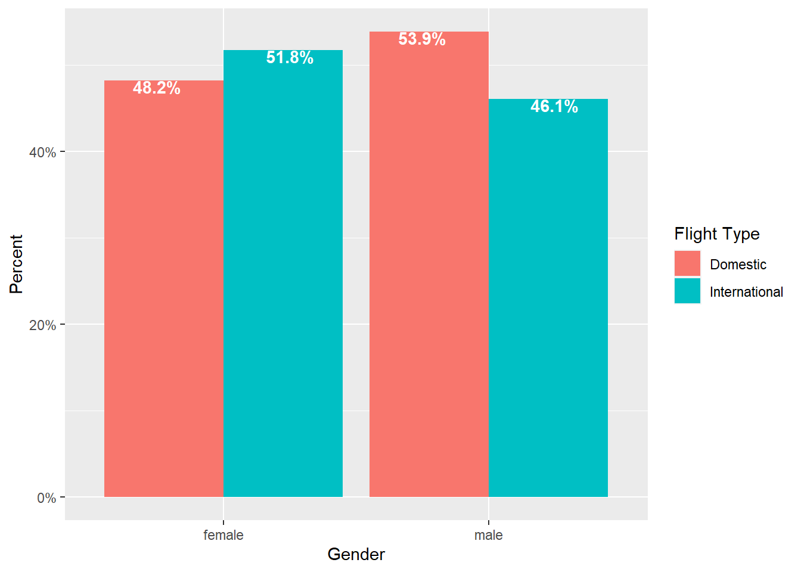Figure 2.8: Side-by-side bar chart (% within group)
# NOTE: The code for this chart is nearly identical to the previous figure # ONLY the changes have been commented on below airlinesat %>% group_by(gender, flight_type) %>% # NOTE: Use .groups="drop" to remove the grouping structure after # summarising the data summarise(n=n(), .groups="drop") %>% mutate(prop=n/sum(n)) %>% ggplot(aes(x=gender, y=prop, fill=flight_type)) + geom_bar(position="dodge", stat="identity") + scale_y_continuous(labels=scales::label_percent()) + labs(x="Gender", y="Percent", fill="Flight Type") + geom_text(aes(label=sprintf("%.1f%%", prop*100)), position=position_dodge(width=1), vjust=.95, fontface="bold", color="white")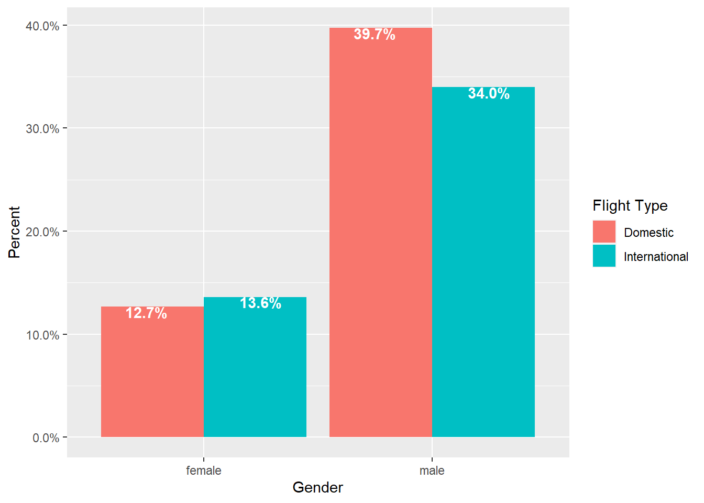Figure 2.9: Side-by-side bar chart (% of total)
2.2.2.2 Column Charts
The standard column chart provides a sum of continuous variable y of each category of disrete variable x
airlinesat %>% ggplot(aes(x=flight_type, y=nflights)) + geom_col()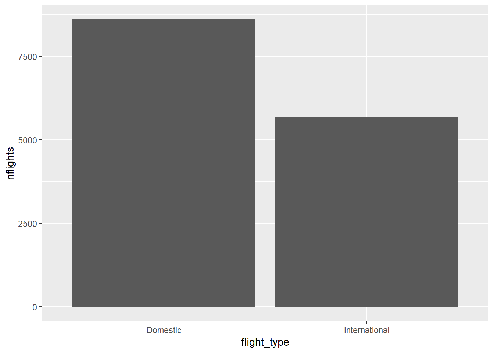Figure 2.10: Standard column chart
To get a different summary statistic, such as mean, we can summarize the data and calculate the summary statistic for each category (and make the graph prettier)
airlinesat %>% group_by(flight_type) %>% summarise(mean=mean(nflights)) %>% ggplot(aes(x=flight_type, y=mean, fill=flight_type)) + geom_col(show.legend=FALSE) + labs(x="Flight Type", y="Mean Number of Flights") + geom_text(aes(label=sprintf("%.2f", mean)), # Format label number vjust=.95, # Vertically adjust the labels fontface="bold", # Bold typeface color="white") # Text color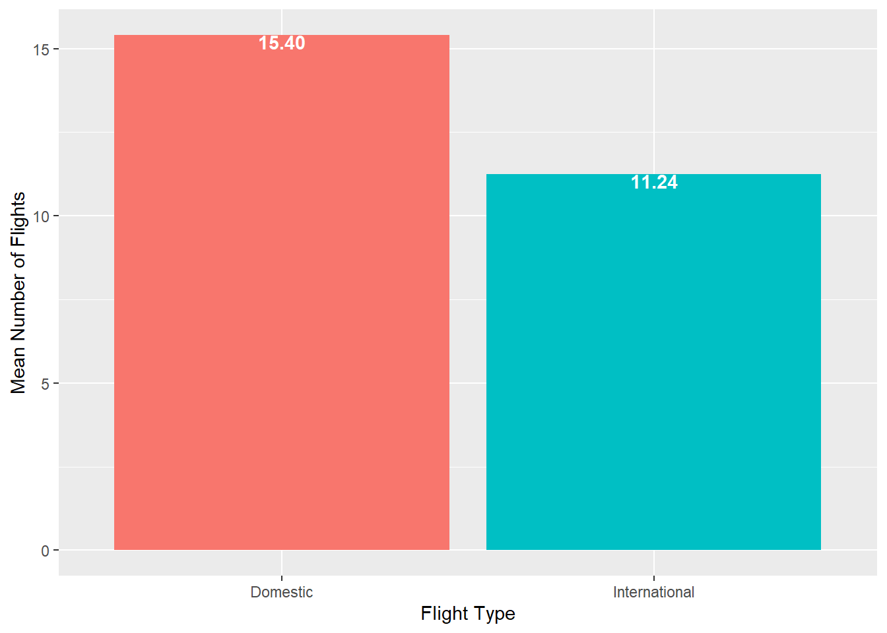Figure 2.11: Column chart showing means
Video Tutorial: Column Charts with ggplot::geom_col (Part 1)
2.2.2.2.1 Side-by-Side Column Chart
A side by side column chart can be used to show two discrete variables on the x-axis
airlinesat %>% group_by(flight_type, flight_purpose) %>% summarise(mean=mean(nflights), .groups="drop") %>% ggplot(aes(x=flight_type, y=mean, fill=flight_purpose)) + geom_col(position="dodge") + labs(x="Flight Type", y="Mean Number of Flights", fill="Flight Purpose") + geom_text(aes(label=sprintf("%.2f", mean)), position=position_dodge(width=1), vjust=.95, fontface="bold", color="white")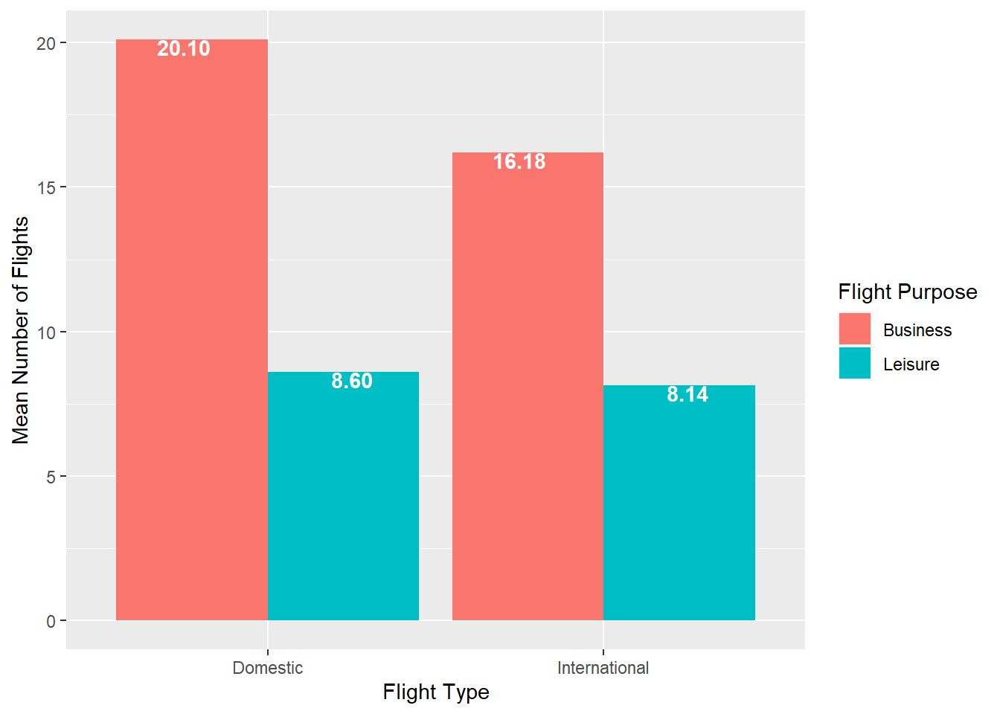Figure 2.12: Side-by-side column chart
Video Tutorial: Column Charts with ggplot::geom_col (Part 2)
2.2.3 Histogram
In ggplot, histograms are produced with the geom_histogram() geom, which produces a histogram of a single continuous variable.
- By default, the y-axis is a count of observations in each “bin” of the x variable
- A bin is a range of values of the continuous x variable
- By default,
ggplotwill produce a histogram with 30 bins, and a message is produced to that effect unless the bins are changed manually
airlinesat %>% ggplot(aes(x=age)) + geom_histogram()`stat_bin()` using `bins = 30`. Pick better value with `binwidth`.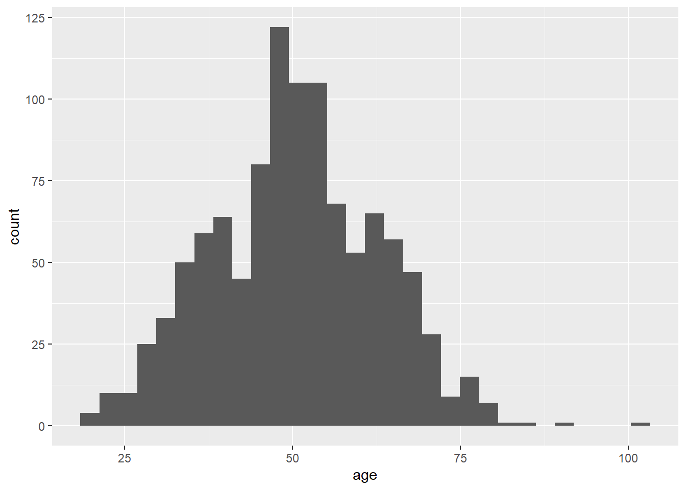Figure 2.13: Standard histogram
2.2.3.1 Changing Bins
Histograms can look quite different based on the bins used. Bins can be changed in two ways: (1) number of bins; and (2) bin width
- Changing the number of bins is done with the
bins=option- For example:
geom_histogram(bins=20)
- For example:
- Changing the bin width is done with the
binwidth=option- For example;
geom_histogram(binwidth=5)
- For example;
- Use the interactive histograms (Figure 2.14 and Figure 2.15 to see how the histograms change
Video Tutorial: Histograms with ggplot::geom_histogram (Part 1)
Figure 2.14: Interactive histogram for number of bins
Figure 2.15: Interactive histogram for bin width
2.2.3.2 Improving the Look
You may find the default histogram a little “blah” or tough to read. Just as the look of bar and column charts could be changed, so can the look of histograms
airlinesat %>%
ggplot(aes(x=age)) +
geom_histogram(color="black", # Adds red border around each bar
fill="tan") + # Makes each bar blue
labs(x="Age", y="Frequency")Figure 2.16: Prettier histogram
Video Tutorial: Histograms with ggplot::geom_histogram (Part 2)
2.2.3.3 Other Options
- Instead of the default count of observations, a density histogram can be created, where the sum of the area of the bars adds up to 1
- Often, a normal curve is added
look of bar and column charts could be changed, so can the look of histograms
airlinesat %>%
ggplot(aes(x=age)) +
geom_histogram(aes(y=..density..), # Request density instead of count
color="black", # Adds red border around each bar
fill="tan") + # Makes each bar blue
stat_function(fun=function(x) # Adds normal curve ovarlay
dnorm(x,
mean=mean(airlinesat$age, na.rm=TRUE), # Mean of normal dist
sd=sd(airlinesat$age, na.rm=TRUE))) + # StdDev of normal dist
labs(x="Age", y="Density")Figure 2.17: Density histogram with normal curve
Video Tutorial: Histograms with ggplot::geom_histogram (Part 3)
2.2.4 Box Plot
Box Plots are drawn with the geom_boxplot() geom, which by default creates a box plot for a continuous y variable, but for each level of a discrete x variable. In addition, the standard box plot does not contain “whiskers”.
To get a box plot for only the continuous y variable, use
x=""as the discrete x variableTo add whiskers, include a
stat_boxplot(geom="errorbar")layerairlinesat %>% ggplot(aes(x="", y=age)) + geom_boxplot() + stat_boxplot(geom="errorbar") + # Add whiskers to box plot labs(x="", # Remove x axis label y="Age") # Make y axis label nicer
Figure 2.18: Single box plot with whiskers
To make comparisons across a discrete x variable, replaces the
x=""from before withx=VARIABLEairlinesat %>% ggplot(aes(x=flight_purpose, y=age)) + geom_boxplot() + stat_boxplot(geom="errorbar") + # Add whiskers to box plot labs(x="Flight Purpose", y="Age")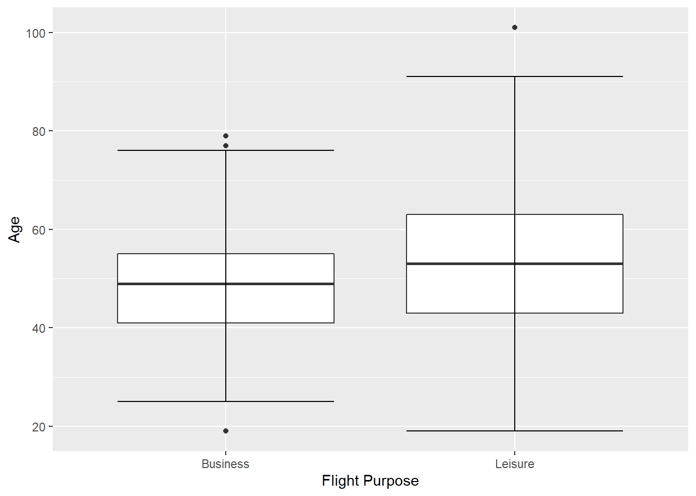Figure 2.19: Multiple box plot
2.2.5 Scatterplot
- Scatterplots are drawn with the
geom_point()geom and are used to show the relationship between two continuous variables- Notice the warning given due to missing values (these warnings will be suppressed in other scatterplots below)
airlinesat %>% ggplot(aes(x=age, y=s10)) + # s10 is satisfaction with condition of airplane geom_point()Warning: Removed 40 rows containing missing values (geom_point).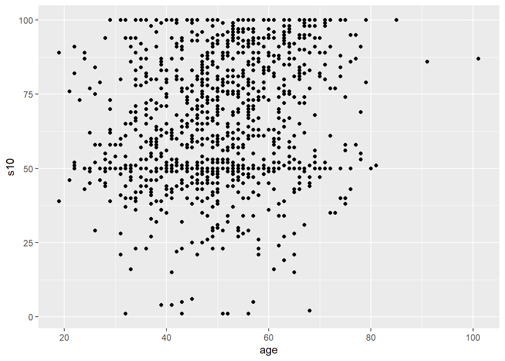Figure 2.20: Standard scatterplot
2.2.5.1 Trendline
- Scatterplots become more helpful when we add a trend line.
- The most common trend line is a simple regression line, although others can be used.
- Use
geom_smooth(method="lm", se=FALSE)to add a linear trend line
airlinesat %>% ggplot(aes(x=age, y=s10)) + # s10 is satisfaction with condition of airplane geom_point() + geom_smooth(method="lm", se=FALSE) + # Add trendline labs(x="Age", y="Satisfaction with Aircraft Condition")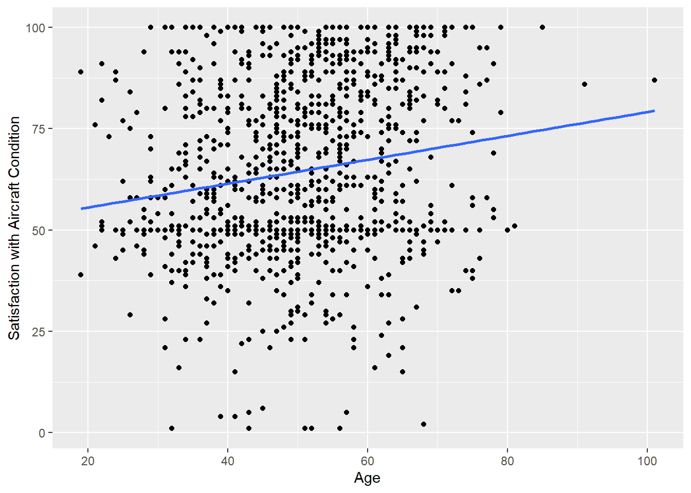Figure 2.21: Scatterplot with trendline
- Use
Video Tutorial: Scatterplots with ggplot::geom_point (Part 1)
2.2.5.2 Other Options
- The color, shape, and size of the points can be changed
- In addition, they can vary by levels of a discrete variable
- If a trend line is requested, separate trend lines will be provided for each level of the discrete variable
airlinesat %>% ggplot(aes(x=age, y=s10, color=flight_type)) + geom_point(shape=17) + geom_smooth(method="lm", se=FALSE) + # Add trendline labs(x="Age", y="Satisfaction with Aircraft Condition", color="Flight Type")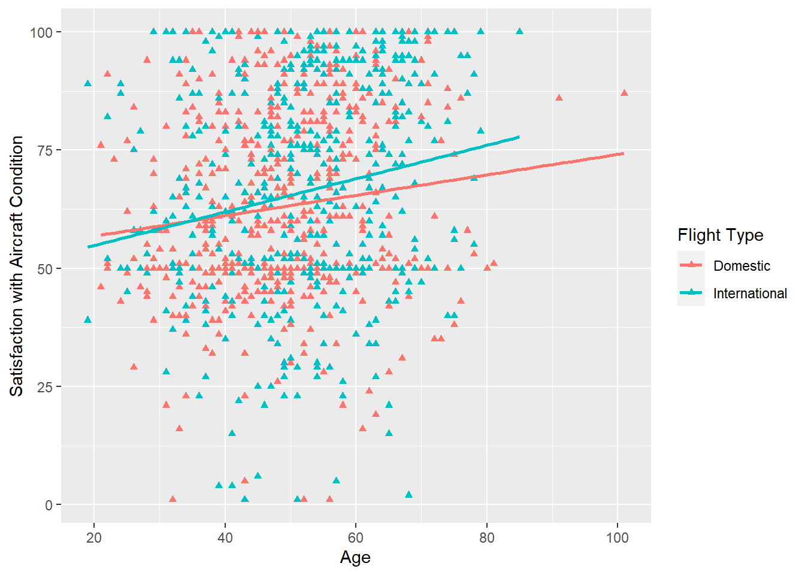Figure 2.22: Scatterplot with different colors for discrete variable
- In addition, they can vary by levels of a discrete variable
Video Tutorial: Scatterplots with ggplot::geom_point (Part 2)
2.3 Tables and Statistics
2.3.1 Frequency Table
2.3.1.1 Base R
- The
table(data$variable)function can produce a one-way frequency table- Wrapping the call to
tablewithproportionswill create the table with proportions (i.e., percent in each category)
table(airlinesat$language) # One way frequency table (counts)English French German 233 10 822proportions(table(airlinesat$language)) # One way table of proportionsEnglish French German 0.218779343 0.009389671 0.771830986Table 2.1: One-way frequency table using Base R - Wrapping the call to
2.3.1.2 Package questionr
The
freq()command from the packagequestionrproduces nice one-way frequency tables (i.e., a frequency table for a single discrete variable)library(questionr) freq(airlinesat$language, # Provide discrete variable cum=TRUE, # Add cumulative percent column total=TRUE) # Add total row at bottomn % val% %cum val%cum English 233 21.9 21.9 21.9 21.9 French 10 0.9 0.9 22.8 22.8 German 822 77.2 77.2 100.0 100.0 Total 1065 100.0 100.0 100.0 100.0Table 2.2: One-way frequency table using
questionr
2.3.2 Crosstabs
2.3.2.1 Base R
- Base R does not do a great job of easily creating cross-tabs and testing for independent of the two variables
- Using base R, a multistep process is required
- Create the two-way frequency table using the
table(rowvar, colvar)function and assign it to a separate object- Display the two-way freq table by just using the table name
- Use the function
proportions(tablename, margin)on the newly created object to get column, row, or total percentagesproportions(tablename)gives total percentagesproportions(tablename, 1)gives row percentagesproportions(tablename, 2)gives column percentages
- Use the function
chisq.test(tablename)on the newly created object to run the test of independence
# Create two way table crosstab <- table(airlinesat$flight_purpose, # row Variable airlinesat$gender) # Column variable crosstab # Display 2-way freq tablefemale male Business 76 449 Leisure 204 336proportions(crosstab, 2) # Display column percentagesfemale male Business 0.2714286 0.5719745 Leisure 0.7285714 0.4280255chisq.test(crosstab) # Run test of independencePearson's Chi-squared test with Yates' continuity correction data: crosstab X-squared = 73.386, df = 1, p-value < 2.2e-16Table 2.3: Cross-tabs using Base R - Create the two-way frequency table using the
2.3.2.2 Alternative Packages
The following packages are not availabe through the BGSU Virtual Computing lab, but can be installed if using R/RStudio on your own machine. These packages produce nicely formatted crosstabs.
2.3.2.2.1 Package sjPlot
Use the function
tab_xtab(var.row=, var.col=, show.col.prc=TRUE)to get a standard crosstab with column percentageslibrary(sjPlot) tab_xtab(var.row=airlinesat$flight_purpose, var.col=airlinesat$gender, show.col.prc=TRUE)flight_purpose
gender
Total
female
male
Business
76
27.1 %449
57.2 %525
49.3 %Leisure
204
72.9 %336
42.8 %540
50.7 %Total
280
100 %785
100 %1065
100 %χ2=73.386 · df=1 · φ=0.265 · p=0.000
Table 2.4: Cross-tab using sjPlot
2.3.2.2.2 Package gmodels
Function
CrossTable(rowvar, colvar, OPTIONS)has many options similar to SPSSlibrary(gmodels) CrossTable(airlinesat$flight_purpose, airlinesat$gender, prop.r=FALSE, # Exclude row percentages prop.t=FALSE, # Exclude total percentages, prop.chisq=FALSE, # Exclude cell contribution to chi-sq digits=2, # 2 digits after decimal point chisq=TRUE, # Request test of independence format="SPSS") # Request SPSS formattingCell Contents |-------------------------| | Count | | Column Percent | |-------------------------| Total Observations in Table: 1065 | airlinesat$gender airlinesat$flight_purpose | female | male | Row Total | --------------------------|-----------|-----------|-----------| Business | 76 | 449 | 525 | | 27.14% | 57.20% | | --------------------------|-----------|-----------|-----------| Leisure | 204 | 336 | 540 | | 72.86% | 42.80% | | --------------------------|-----------|-----------|-----------| Column Total | 280 | 785 | 1065 | | 26.29% | 73.71% | | --------------------------|-----------|-----------|-----------| Statistics for All Table Factors Pearson's Chi-squared test ------------------------------------------------------------ Chi^2 = 74.58406 d.f. = 1 p = 5.811064e-18 Pearson's Chi-squared test with Yates' continuity correction ------------------------------------------------------------ Chi^2 = 73.38648 d.f. = 1 p = 1.065938e-17 Minimum expected frequency: 138.0282Table 2.5: Cross-tab using gmodels
2.3.3 Measures of Centrality and Dispersion
2.3.3.1 Base R
Any individual summary statistic can be easily calculated using Base R with functions such as:
mean(x)for meansd(x)for standard deviationquantile(x, .percentile)for percentiles (e.g., ‘.50’ would be median)
For summary statistics except for standard deviation, the
summary(object)function can be used, where object can be a single variable or an entire data frame# Summary for a single variable summary(airlinesat$nflights)Min. 1st Qu. Median Mean 3rd Qu. Max. 1.00 4.00 8.00 13.42 16.00 457.00Table 2.6: Summary statistics in R Base, one variable
# Subset of airlinesat summary(airlinesat[,c("age", "nflights", "s10")])age nflights s10 Min. : 19.00 Min. : 1.00 Min. : 1.00 1st Qu.: 42.00 1st Qu.: 4.00 1st Qu.: 50.00 Median : 50.00 Median : 8.00 Median : 61.00 Mean : 50.42 Mean : 13.42 Mean : 64.54 3rd Qu.: 58.00 3rd Qu.: 16.00 3rd Qu.: 83.00 Max. :101.00 Max. :457.00 Max. :100.00 NA's :40Table 2.7: Summary statistics in R Base, multiple variables
Summary statistics for a continuous variable by different levels of a discrete variable can also be done in Base R using the
tapply(continuous variable, discrete variable, function)functiontapply(airlinesat$nflights, # Continous variable to apply the function to airlinesat$flight_purpose, # Discrete, grouping variable summary) # R function to apply by group$Business Min. 1st Qu. Median Mean 3rd Qu. Max. 1.00 6.00 12.00 18.65 25.00 120.00 $Leisure Min. 1st Qu. Median Mean 3rd Qu. Max. 1.000 3.000 4.000 8.337 8.000 457.000Table 2.8: Summary statistics in R Base, one variable, grouped
2.3.3.2 Package dplyr
- The
dplyrpackage can also be used to manually create tables of summary statistics- One continuous variable
airlinesat %>% summarise(mean=mean(age), sd=sd(age), q1=quantile(age, .25), median=quantile(age,.50), q3=quantile(age, .75))mean sd q1 median q3 1 50.41972 12.27464 42 50 58Table 2.9: Summary statistics using dplyr, one variable - Multiple continuous variables
airlinesat %>% select(age, nflights, s10) %>% summary()age nflights s10 Min. : 19.00 Min. : 1.00 Min. : 1.00 1st Qu.: 42.00 1st Qu.: 4.00 1st Qu.: 50.00 Median : 50.00 Median : 8.00 Median : 61.00 Mean : 50.42 Mean : 13.42 Mean : 64.54 3rd Qu.: 58.00 3rd Qu.: 16.00 3rd Qu.: 83.00 Max. :101.00 Max. :457.00 Max. :100.00 NA's :40Table 2.10: Summary statistics using dplyr, multiple variables - One continuous variable by a discrete/grouping variable
airlinesat %>% group_by(flight_purpose) %>% summarise(mean=mean(age), sd=sd(age), q1=quantile(age, .25), median=quantile(age,.50), q3=quantile(age, .75))# A tibble: 2 x 6 flight_purpose mean sd q1 median q3 <fct> <dbl> <dbl> <dbl> <dbl> <dbl> 1 Business 48.5 9.91 41 49 55 2 Leisure 52.3 14.0 43 53 63Table 2.11: Summary statistics using dplyr, one variable, grouped
2.3.3.3 Package vtable
- Package
vtableproduces very nice looking tables of summary statistics, but it isn’t available in BGSU’s Virtual Computer Lab. - Use function
sumtable(data, vars="varname")to produce the table- One continuous variable
library(vtable) sumtable(airlinesat, vars="nflights")Variable N Mean Std. Dev. Min Pctl. 25 Pctl. 75 Max nflights 1065 13.419 20.226 1 4 16 457 Table 2.12: Summary statistics using vtable, one variable - Multiple continuous variables
sumtable(airlinesat, vars=c("nflights","age","s10"), # Use `c()` for multiple variables add.median=TRUE) # Request medianVariable N Mean Std. Dev. Min Pctl. 25 Pctl. 50 Pctl. 75 Max nflights 1065 13.419 20.226 1 4 8 16 457 age 1065 50.42 12.275 19 42 50 58 101 s10 1025 64.539 21.408 1 50 61 83 100 Table 2.13: Summary statistics using vtable, multiple variable - One or more continuous variables by a discrete/grouping variable
sumtable(airlinesat, vars=c("nflights","age","s10"), add.median=TRUE, group="flight_purpose")Variable N Mean SD Median N Mean SD Median flight_purpose Business Leisure nflights 525 18.646 17.665 12 540 8.337 21.254 4 age 525 48.497 9.911 49 540 52.289 13.958 53 s10 511 61.955 21.14 60 514 67.107 21.384 65 Table 2.14: Summary statistics using vtable, multiple variables, grouped
2.3.4 Correlation
Correlation provides a measure of the strength of association between two continuous variables.
2.3.4.1 Base R
- Base R can easily provide the correlation and a test of the correlation using the
cor.test(variable1, variable2)function- By default, it includes only observations that are non-missing in both variables
cor.test(airlinesat$age, airlinesat$nflights)Pearson's product-moment correlation data: airlinesat$age and airlinesat$nflights t = -3.7998, df = 1063, p-value = 0.000153 alternative hypothesis: true correlation is not equal to 0 95 percent confidence interval: -0.17461941 -0.05608231 sample estimates: cor -0.115763Table 2.15: Correlation with test in Base R - Base R can also easily provide a correlation matrix of variables using the
cor(data)function- By default, correlation will only be calculated for those pairs of variables that have no missing values
- Use option
use="pairwise.complete.obs"to exclude observations that are non-missing in both variables - However, Base R cannot produce a correlation matrix with p-values
# First create data frame with only variables wanted mycorr <- airlinesat[,c("age", "nflights", "s10")] # Use function `round` to limit to 3 digits after decimal point round(cor(mycorr, use="pairwise.complete.obs"), 3)age nflights s10 age 1.000 -0.116 0.167 nflights -0.116 1.000 -0.121 s10 0.167 -0.121 1.000Table 2.16: Correlation matrix in Base R
2.3.4.2 Package Hmisc
- The function
rcorr()from the packageHmisc, which is available in the BGSU Virtual Computing Lab, can be used to create correlation matrices also- The
rcorr()function requires a matrix, so the data frame of variables must be coerced into a matrix first - By default,
rcorr()produces three separate matrices: correlation, number of observations, and p-values - Separate tables can be requested
rcorr(as.matrix(dataframe))]]"r"]]provides the correlation matrixrcorr(as.matrix(dataframe))]]"P"]]provides the matrix of p-values
library(Hmisc) rcorr(as.matrix(mycorr)) # NOTE: 'mycorr' created in previous codeage nflights s10 age 1.00 -0.12 0.17 nflights -0.12 1.00 -0.12 s10 0.17 -0.12 1.00 n age nflights s10 age 1065 1065 1025 nflights 1065 1065 1025 s10 1025 1025 1025 P age nflights s10 age 2e-04 0e+00 nflights 2e-04 1e-04 s10 0e+00 1e-04Table 2.17: Correlation matrix using Hmisc # Use 'round()' function to limit digits in output round(rcorr(as.matrix(mycorr))[["r"]],4) round(rcorr(as.matrix(mycorr))[["P"]],5)age nflights s10 age 1.0000 -0.1158 0.1671 nflights -0.1158 1.0000 -0.1206 s10 0.1671 -0.1206 1.0000age nflights s10 age NA 0.00015 0.00000 nflights 0.00015 NA 0.00011 s10 0.00000 0.00011 NATable 2.18: Separate correlation matrix output using Hmisc - The
2.3.4.3 Package sjPlot
- The function
tab_corr()from thesjPlotpackage produces very nice correlation matricessjPlotis not available in BGSU’s Virtual Computing Lab
library(sjPlot) tab_corr(mycorr, # Data frame of variables to use; created earlier na.deletion = "pairwise", # Delete obs if either variable is missing corr.method = "pearson", # Choose Pearson correlation coefficient show.p = TRUE, # Show asterisks for significant correlations digits = 3, # Show three decimal points triangle = "lower", # Show only lower triangle fade.ns=FALSE) # Do not fade insignficant correlations)age nflights s10 age nflights -0.116*** s10 0.167*** -0.121*** Computed correlation used pearson-method with pairwise-deletion. Table 2.19: Correlation matrix output using sjPlot
2.3.4.4 Package GGally
The
ggpairs()function from packageGGallycan produce a combination scatterplot and correlation matrixlibrary(GGally) ggpairs(mycorr, # Data frame created earlier lower=list(continuous=wrap("smooth", # Adds fit lines... method="lm", # Using linear regression... se=FALSE, # Without CI bands color="blue")), # Color dots diag=list(continuous="blankDiag")) # Sets diagonals to be blank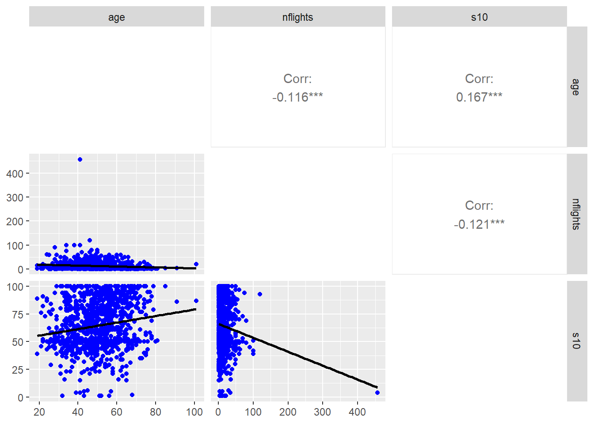Figure 2.23: Combination scatterplot/correlation matrix using GGally